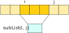

Introducción a la programación funcional
Máster en Ingeniería Informática
Facultad de Informática
Universidad Complutense de Madrid
- ¿Qué es la programación funcional?
- Funciones recursivas
- Recursión sobre listas
- Recursión de cola
- Bucles y recursión
¿Qué es la programación funcional?
¿Qué es la programación funcional?
- Es el paradigma de programación basado en la definición y aplicación de funciones.
- En la programación funcional pura, las funciones se consideran en el estricto sentido matemático:
- Una función f: X → Y asigna a cada elemento de X un único valor de Y.
- Es decir, la aplicación de función f(x) depende exclusivamente de x.
Ejemplos
fun suma(x: Int, y: Int) = x + y Función pura
// El valor devuelto depende únicamente de los parámetros
var x: Int = 0;
fun incrementar(y: Int): Int { No es función pura
x += y // ← Produce un efecto lateral
return x
}
fun obtenerLista(nombreFich: String): List<String> = No es función pura
File(nombreFich).readLines() // No solo depende del nombre del
// fichero sino también del contenido
¿Qué ventaja tienen las funciones puras?
- Transparencia referencial: Toda expresión depende únicamente de los valores de las variables que contiene.
- Es más fácil razonar sobre el comportamiento de una función en ausencia de efectos laterales.
Son equivalentes:
val z = 5
print("${suma(z, 1)} = ${suma(z, 1)}")
val z = 5
val s = suma(z, 1)
print("$s = $s")
¿Qué ventaja tienen las funciones puras?
- Transparencia referencial: Toda expresión depende únicamente de los valores de las variables que contiene.
- Es más fácil razonar sobre el comportamiento de una función en ausencia de efectos laterales.
No son equivalentes:
print(
"${incrementar(3)} = ${incrementar(3)}"
)
val s = incrementar(3)
print("$s = $s")
¿Qué ventaja tienen las funciones puras?
- Es más fácil razonar sobre ellas.
- Son más fáciles de testear.
- Son más fáciles de reutilizar.
- Son más fáciles de paralelizar.
¡Muchos menos bugs!
Características de los lenguajes funcionales
- Las funciones son ciudadanas de primera clase.
- Se comportan como cualquier otro valor del lenguaje.
- Podemos pasar funciones como parámetro, almacenarlas en variables, devolver funciones como resultado, etc.
- Fomentan o imponen la inmutabilidad.
- No es posible cambiar el valor de una variable o de una estructura de datos.
- Permite compartición de estructuras de datos sin riesgo de bugs
- Limitan o encapsulan los efectos laterales.
- Utilizan recursión en lugar de bucles.
Funciones recursivas
Recursión
- Una función recursiva es una función que se invoca a sí misma.
- La recursión permite expresar cómputos de manera alternativa a los bucles, pero sin mutar variables.
fun factorial(n: Int): Int = if (n == 0) 1 else n * factorial(n - 1) println(factorial(5)) // → 120 - En Kotlin, es necesario indicar el tipo de retorno de una función recursiva.
Ejemplo: factorial(3)
fun factorial(n: Int): Int =
if (n == 0) 1 else n * factorial(n - 1)
factorial(3)
→ 3 * factorial(2)
→ 3 * (2 * factorial(1))
→ 3 * (2 * (1 * factorial(0))) Caso base
→ 3 * (2 * (1 * 1))
→ 3 * (2 * 1)
→ 3 * 2
→ 6
Recursión sobre listas
Funciones recursivas sobre listas
Calcular la suma de los elementos de una lista:
// Suma los elementos de la lista `xs` pasada como parámetro
// desde el situado en el índice `i` hasta el final de la lista
fun sumaElemsRec(xs: List<Int>, i: Int): Int =
if (i == xs.size) 0 else xs[i] + sumaElemsRec(xs, i + 1)
// Suma todos los elementos de la lista `xs` pasada como parámetro
fun sumaElems(xs: List<Int>) = sumaElemsRec(xs, 0) Llamada inicial
A menudo son necesarias funciones auxiliares con parámetros extra.
Funciones recursivas sobre listas
Estas funciones auxiliares pueden declararse localmente, para que no sean visibles desde el exterior.
fun sumaElems(xs: List<Int>): Int {
// Función auxiliar
fun sumaElemsRec(xs: List<Int>, i: Int): Int =
if (i == xs.size) 0 else xs[i] + sumaElemsRec(xs, i + 1)
// Llamada inicial
return sumaElemsRec(xs, 0)
}
Funciones recursivas sobre listas
El parámetro xs puede eliminarse de la función auxiliar, ya que está accesible en un contexto superior y se mantiene constante a lo largo de las llamadas recursivas.
fun sumaElems(xs: List<Int>): Int {
// Función auxiliar
fun sumaElemsRec(i: Int): Int =
if (i == xs.size) 0 else xs[i] + sumaElemsRec(i + 1)
// Llamada inicial
return sumaElemsRec(0)
}
Ejemplo: sumaElems([5, 10, 4])
sumaElems([5, 10, 4])
→ sumaElemsRec(0)
→ 5 + sumaElemsRec(1)
→ 5 + (10 + sumaElemsRec(2))
→ 5 + (10 + (4 + sumaElemsRec(3)))
→ 5 + (10 + (4 + 0))
→ 5 + (10 + 4)
→ 5 + 14
→ 19
El método subList
fun <T> List<T>.subList(fromIndex: Int, toIndex: Int): List<T>
- Obtiene una sublista de
thiscon los elementos comprendidos entrefromIndex(incluido) ytoIndex(excluído).listOf(6, 3, 1, 5, 10, 3).subList(2, 4) // → [1, 5]
El método subList
- Permite implementar recorridos sobre listas sin necesidad de pasar índices como parámetros.
fun sumaElems(xs: List<Int>): Int =
if (xs.isEmpty()) 0 else xs[0] + sumaElems(xs.subList(1, xs.size))
El método subList
- Tiene coste O(1), porque no se realiza ninguna copia del segmento obtenido; se genera una vista de la lista original.

Ejemplo
- Dada una lista de enteros
xs, obtener otra lista con los elementos dexsque no sean pares:
fun quitarPares(xs: List<Int>): List<Int> = when {
// Lista vacía
xs.isEmpty() -> listOf()
// Lista cuyo primer elemento es par
xs[0] % 2 == 0 -> quitarPares(xs.subList(1, xs.size))
// Lista cuyo primer elemento es impar
else -> listOf(xs[0]) + quitarPares(xs.subList(1, xs.size))
}
Ejemplo: quitarPares([3, 4, 7, 6])
quitarPares([3, 4, 7, 6])
→ [3] + quitarPares([4, 7, 6])
→ [3] + quitarPares([7, 6])
→ [3] + ([7] + quitarPares([6]))
→ [3] + ([7] + quitarPares([]))
→ [3] + ([7] + [])
→ [3] + [7]
→ [3, 7]
Ejemplo
Búsqueda lineal de un elemento en una lista:
fun <T> buscarElem(xs: List<T>, x: T): Boolean = when {
// Lista vacía
xs.isEmpty() -> false
// El elemento a buscar está al principio
xs[0] == x -> true
// El elemento a buscar no está al principio
else -> buscarElem(xs.subList(1, xs.size), x)
}
Ejemplo: buscarElem([3, 4, 7, 6], 7)
buscarElem([3, 4, 7, 6], 7)
→ buscarElem([4, 7, 6], 7)
→ buscarElem([7, 6], 7)
→ true
¿Qué pasa si...?
val l1 = (1..10000).toList() // l1 = [1, 2, ..., 10000]
println(buscarElem(l1, -3))
val l2 = List(20000) { 2 } // l2 = [2, 2, ..., 2]
println(sumaElems(l2))
Exception in thread "main" java.lang.StackOverflowError
at buscarElem(...)
...
El precio de la recursión
- Durante la ejecución se almacena una pila de llamadas a función (call stack).
f()Función ejecutándose actualmente g()Función que llamó a fh()Función que llamó a gmain()Función principal - Cada vez que se llama a una función se inserta un nuevo frame en la pila.
- Cuando una función finaliza, se elimina su frame de la pila.
El precio de la recursión
- Cada frame de la pila contiene información relativa a esa llamada (variables locales, etc.)
- El tamaño de la pila de llamadas esta limitado.
- Si la cadena de llamadas es muy grande, se supera ese límite de tamaño, provocando un desbordamiento de pila (Stack Overflow).
- ¿Cómo evitarlo? ➞ Recursión de cola
Recursión de cola
Recursión de cola (o final)
- Decimos que una llamada recursiva es final si no se realiza ninguna operación tras esa llamada
- ...salvo devolver el valor devuelto por la llamada recursiva.
- Decimos que una función tiene recursión de cola si todas sus llamadas recursivas son finales.
Ejemplos
fun factorial(n: Int): Int =
if (n == 0) 1 else n * factorial(n - 1) Llamada no final
No tiene recursión de cola
fun quitarPares(xs: List<Int>): List<Int> = when {
xs.isEmpty() -> listOf()
xs[0] % 2 == 0 -> quitarPares(xs.subList(1, xs.size)) Llamada final
else -> listOf(xs[0]) + quitarPares(xs.subList(1, xs.size)) Llamada no final
}
No tiene recursión de cola
Ejemplos
fun sumaElems(xs: List<Int>): Int {
fun sumaElemsRec(i: Int): Int =
if (i == xs.size) 0
else xs[i] + sumaElemsRec(i + 1) Llamada no final
return sumaElemsRec(0)
}
No tiene recursión de cola
fun <T> buscarElem(xs: List<T>, x: T): Boolean = when {
xs.isEmpty() -> false
xs[0] == x -> true
else -> buscarElem(xs.subList(1, xs.size), x) Llamada final
}
Sí tiene recursión de cola
Optimización de recursión de cola
Cuando una función realiza una llamada recursiva, se apila un marco nuevo en la pila de llamadas:
f(x2) |
Llamada recursiva a f |
f(x1) |
|
main() |
Optimización de recursión de cola
Pero si la función tiene recursión de cola, el marco de la llamada recursiva puede sustituir al anterior:
|
f(x1) |
main() |
|
f(x2) |
main() |
El espacio ocupado por la pila de llamadas es constante, independientemente del número de llamadas recursivas.
Recursión de cola en Kotlin
- Para aplicar la optimización de recursión de cola en Kotlin, ha de indicarse explícitamente:
tailrec fun <T> buscarElem(xs: List<T>, x: T): Boolean = when { xs.isEmpty() -> false xs[0] == x -> true else -> buscarElem(xs.subList(1, xs.size), x) } - De este modo, ya no hay desbordamiento de pila:
val l1 = (1..10000).toList() // l1 = [1, 2, ..., 10000] println(buscarElem(l1, -3)) // Imprime 'false'
¿Y si la función no tiene recursión de cola?
- En muchos casos, es posible transformar la función en otra con recursión de cola utilizando parámetros acumuladores.
- Un parámetro acumulador es un parámetro en el que se va construyendo el resultado de la función.
- Cuando se llega al caso base, se devuelve el valor del parámetro acumulador.
Ejemplo
Sin parámetro acumulador:
fun factorial(n: Int): Int =
if (n == 0) 1 else n * factorial(n - 1)
Con parámetro acumulador:
tailrec fun factorialRec(n: Int, ac: Int): Int =
if (n == 0) ac
else factorialRec(n - 1, ac * i)
Llamada inicial: factorial(n, 1)
Ejemplo
De este modo:
factorial(3)
→ 3 * factorial(2)
→ 3 * (2 * factorial(1))
→ 3 * (2 * (1 * factorial(0)))
→ 3 * (2 * 1)
→ 3 * 2
→ 6
factorial(3)
→ factorialRec(3, 1)
→ factorialRec(2, 3) 3 = 1 * 3
→ factorialRec(1, 6) 6 = 3 * 2
→ factorialRec(0, 6) 6 = 6 * 1
→ 6
Resultado
fun factorial(n: Int): Int {
tailrec fun factorialRec(i: Int, ac: Int): Int =
if (i == 0) ac else factorialRec(i - 1, ac * i)
return factorialRec(n, 1) // Llamada inicial
}
Ejemplo: quitarPares
Sin parámetro acumulador:
fun quitarPares(xs: List<Int>): List<Int> = when {
xs.isEmpty() -> listOf()
xs[0] % 2 == 0 -> quitarPares(xs.subList(1, xs.size))
else -> listOf(xs[0]) + quitarPares(xs.subList(1, xs.size))
}
Con parámetro acumulador:
tailrec fun quitarParesRec(xs: List<Int>, ac: List<Int>): List<Int> = when {
xs.isEmpty() -> ac
xs[0] % 2 == 0 -> quitarParesRec(xs.subList(1, xs.size), ac)
else -> quitarParesRec(xs.subList(1, xs.size), ac + xs[0])
}
Llamada inicial: quitarParesRec(xs, listOf())
Ejemplo: quitarPares
quitarPares([1, 4, 6, 9, 11])
→ quitarParesRec([1, 4, 6, 9, 11], [])
→ quitarParesRec([4, 6, 9, 11], [1])
→ quitarParesRec([6, 9, 11], [1])
→ quitarParesRec([9, 11], [1])
→ quitarParesRec([9, 11], [1, 9])
→ quitarParesRec([11], [1, 9, 11])
→ [1, 9, 11]
Bucles y recursión
Bucles y recursión
- Todo bucle puede expresarse mediante una o varias funciones recursivas de cola.
- Los parámetros de la función recursiva son las variables que se modifican en el bucle.
- La condición de salida del bucle determina el caso base de la recursión.
- Las llamadas recursivas indican cómo evolucionan las variables en una iteración del bucle.
- La llamada inicial se corresponde con la inicialización de las variables en el bucle.
Ejemplo
fun exp(n: Int): Int {
var i = n
var result = 1
while (i > 0) {
result = result * 2
i = i - 1
}
return result
}
fun exp(n: Int): Int {
tailrec fun expRec(i: Int, result: Int): Int
= when {
i > 0 -> expRec(i - 1, result * 2)
else -> result
}
return expRec(n, 1)
}
Bibliografía
- Pierre-Yves Saumont
The Joy of Kotlin
Manning Publications (2019)
Capítulo 4